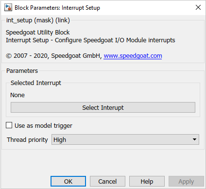
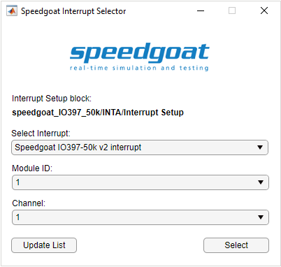

Interrupt Setup
Interrupt Setup
Description
This block represents hardware interrupts from Speedgoat I/O modules. It can be used to asynchronously trigger a subsystem or provide the pulse for the model’s base rate.
![[Note]](images/note.png) | Note |
|---|---|
This block cannot be used in a referenced model or in variant subsystems. |
Supported I/O Modules
All Speedgoat I/O modules with interrupt functionality can be used with this block.
Ports
If the Use as Model Trigger checkbox is unchecked, the Interrupt Setup block has one output port which can be connected to a Function-Call Subsystem block.
Refer to the usage notes if you want to use the interrupt in a referenced model.
Parameters
The Select Interrupt button opens a MATLAB Application which allows you to select one of the available interrupt sources.

Choose your interrupt source using the Select Interrupt drop-down menu. The list is generated based on all the Setup blocks of interrupt-capable I/O modules in your model.

If you have more than one of the selected I/O modules in your model, select the appropriate Module ID.
If you have more than one interrupt channel available, select the appropriate Channel.
If you are using the Interrupt Setup block in combination with a Simulink-programmable FPGA I/O module targeting the HDL Coder workflow, you will only be able to select your interrupt source in the generated model once you run through the HDL Workflow Advisor.
- Use as Model Trigger
Check this box if you want to trigger your model’s base rate with this interrupt source instead of the CPU timer. Only one Interrupt Setup block per model can have this functionality enabled.
When the interrupt is used to trigger the model, the real-time application will use the interrupt signal to trigger the base rate. Since the model does not implicitly know how much time will pass between two interrupts, you need to make sure the fundamental sample time is defined accordingly. Refer to the MathWorks web documentation to learn more about the fixed-step size.
The simulation time of your model is defined by this fixed-step size and will therefore only be correct if the latter matches the time interval between two consecutive interrupts.
Example: Suppose the base rate of your model is 1 kHz, but the interrupt used as a global model trigger is generated at 10 kHz. The simulation time shown on the target screen will increment 10x faster than expected. To fix this, set the fixed-step size in your model's configuration properties to 1/10e4 or 0.0001
- Use in Polling Mode
Check this box if you want to enable Polling Mode. In Polling Mode, the block will continuously query the selected interrupt source instead of idly waiting for an interrupt to occur. Note that Polling Mode is only available for certain specific interrupt sources.
- Thread Priority
If you use the interrupt to trigger an asynchronous subsystem, you can decide at which priority it will be executed:
High: The subsystem will execute with a priority higher than the base rate of the model. Use this if a very quick reaction time is required and the computational load is low. Priority value = 254
Low: The subsystem will execute at a lower priority, similar to the slowest rate in your model. Use this for less time-critical background tasks. Priority value = 193
Manual: Set the priority value directly
- Manual Priority
If you set the Thread priority to Manual, enter the desired value here. Refer to the MathWorks web documentation for more information.